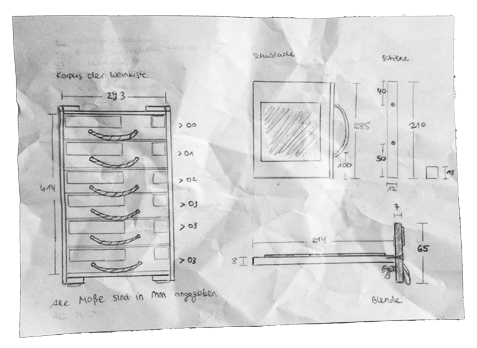
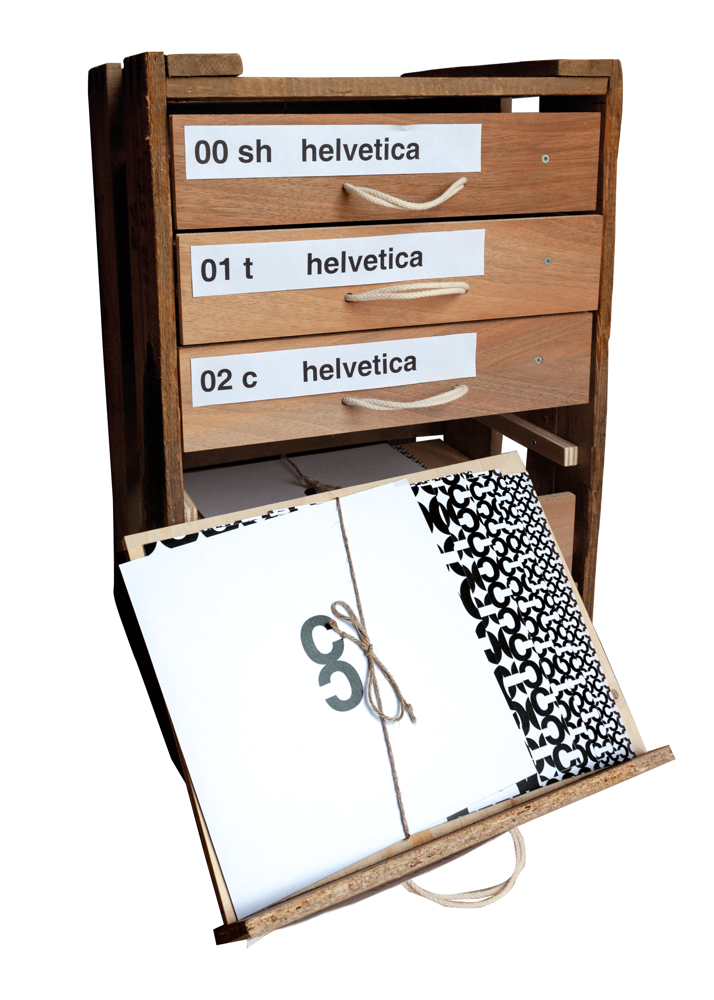
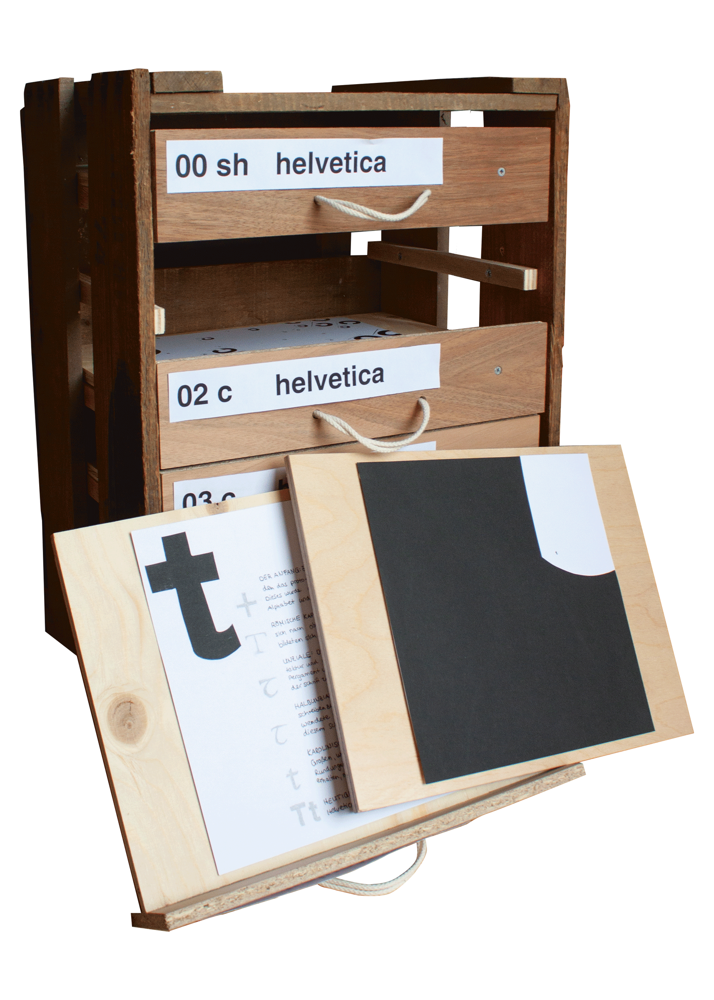

am anfang war der plan … dann folgte die umsetzung – der minuskelsatz in seiner entstehung
der minuskelsatz, als sammlung für meine experimente mit minuskeln sollte an einen schubkastenschrank, in denen zu zeiten der beweglichen lettern der bleisatz aufbewahrt wurde, erinnern. um dies zu realisieren wählte ich als grundmaterial holz. weitere materialien, die ich verwendet habe, waren schrauben, klebeband, patafix, papier und eine kordel. zudem habe ich werkzeuge, wie einen bohrer, einen schrauber, einen winkel, ein zollstock, 3 mm plättchen, schleifpapier, zwei schraubzwingen, einen cutter und einen drucker gebraucht.
als einen vorgefertigten grundkorpus verwendete ich eine alte weinkiste aus meiner heimat, der pfalz. schon zu beginn meiner arbeit stellte ich fest, dass die kiste nicht gerade gebaut wurde, weshalb ich die einzelnen schubladen und blenden auch diesen etwas schiefen umständen anpassen musste. nachdem ich das zugeschnittene holz für die schubladenböden, schienen und blenden hatte, machte ich mich daran diese zuschnitte abzuschleifen. danach konnte ich meine weinkiste vermessen und die schienen anbringen.
eigentlich wollte ich gleich mit dem zusammenfügen von schubladenboden und blende beginnen, doch es kam zu einer kleinen verzögerung, da die bretter für den schubladenboden zu dünn waren, um sie mit der blende richtig zu verschrauben und ich die schienen in der weinkiste zuerst falsch angeschraubt hatte.
zuerst war das falsche anschrauben kein problem, aber durch die neu zugeschnittenen, jetzt 8 mm dicken holzplatten wurde der platz zwischen schubladenboden und der oberen kante der blende zu klein. deshalb habe ich die schienen entfernt und erneut, diesmal richtig, angeschraubt.
die blenden habe ich von unten nach oben einzeln angepasst, damit ich auf die schieflage der weinkiste eingehen kann. daher habe ich jede blende erst mit doppelseitigem klebeband in der richtigen position an dem schubladenboden befestigt, bevor dieser mit der blende verschraubt wurde. das hat mit den dickeren platten und zwei helfenden händen auch gut geklappt. soweit waren die schubladen jetzt einsatzbereit, es fehlten nur noch die kordel, als griff und die beschriftung. um löcher für die kordel zu bohren waren wieder vier hände nötig. ich bohrte diese unterhalb des schubladenbodens in die blende, damit später die knoten der kordel nicht sichtbar sind. die kordel führte ich doppelt gelegt durch die öffnungen, da sie sonst zu dünn gewesen wäre.

die beschriftung wählte ich einerseits passend zu dem jeweiligen inhalt in den schubladen, andererseits sollte auch hier der schubkasten eines bleisatzes nachgeahmt werden. daher entschied ich mich für eine nummerierung, die nennung der jeweiligen minuskel in der aufgabe und die verwendete schriftart. bei der ersten schublade, welche kein experiment, sondern die einführung in das thema beinhaltet, machte ich eine ausnahme und ersetzte die verwendete minuskel durch meine initialen.
so ist auch von außen erkennbar, wie die schubladen zusammengehören und in welcher reihenfolge sie „gelesen“ werden.
die 200 mm x 200 mm großen papiere mit den experimenten habe ich auf jedem schubladenboden mit patafix an zwei stellen befestigt. bei dem ersten experiment sind zwei papiere unterzubringen, weshalb ich in diese schublade zwei etagen, mithilfe von zwei schienen und einer holzplatte, unterteilt habe. bei dem dritten experiment habe ich die drei teile mit jeweils sieben papieren auf die unteren drei schubladen aufgeteilt. in den schubladen selbst habe ich ein dekopapier als halterung befestigt und die eigentlichen papiere des experiments mit der halterung durch eine kleine schnur verbunden. so sind zwar nicht alle blätter des dritten experiments gleichzeitig zu sehen, doch sie sind strukturiert angeordnet und können beliebig herausgelegt und betrachtet werden.
